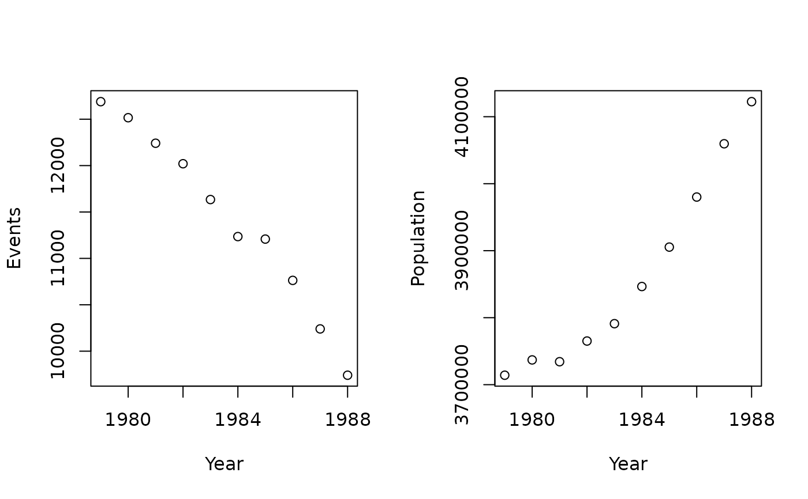

Initialize CAR model
initialize_ucar.RdThis function performs checks and prepares data for use with either an MSTCAR, MCAR, or UCAR model. This function additionally specifies all of the model parameters, such as model type, event data type, intensity of smoothing in the UCAR model, and more.
Usage
initialize_ucar(
name,
data,
adjacency,
dir = tempdir(),
show_plots = TRUE,
ignore_checks = FALSE,
method = c("binomial", "poisson"),
impute_lb = 1,
impute_ub = 9,
seed = NULL,
initial_values = NULL,
priors = NULL
)
initialize_ucar_restricted(
name,
data,
adjacency,
dir = tempdir(),
A = NULL,
m0 = NULL,
show_plots = TRUE,
ignore_checks = FALSE,
method = c("binomial", "poisson"),
impute_lb = 1,
impute_ub = 9,
seed = NULL,
initial_values = NULL,
priors = NULL
)
initialize_mcar(
name,
data,
adjacency,
dir = tempdir(),
show_plots = TRUE,
ignore_checks = FALSE,
method = c("binomial", "poisson"),
impute_lb = 1,
impute_ub = 9,
seed = NULL,
initial_values = NULL,
priors = NULL
)
initialize_mstcar(
name,
data,
adjacency,
dir = tempdir(),
show_plots = TRUE,
ignore_checks = FALSE,
method = c("binomial", "poisson"),
impute_lb = 1,
impute_ub = 9,
seed = NULL,
initial_values = NULL,
priors = NULL,
rho_up = FALSE
)Arguments
- name
Name of model and corresponding folder
- data
Dataset including mortality (Y) and population (n) information
- adjacency
Dataset including adjacency information
- dir
Directory where model will live
- show_plots
If set to
FALSE, suppresses check plots generated for MSTCAR models- ignore_checks
If set to
TRUE, ignores data checks. Only use if you are certain that your input data is correct and you are encountering bugs during setup- method
Run model with either Binomial data or Poisson data
- impute_lb
If counts are suppressed for privacy reasons,
impute_lbis lower bound of suppression, typically 0 or 1- impute_ub
If counts are suppressed for privacy reasons,
impute_ubis upper bound of suppression, typically 10- seed
Set of random seeds to use for data replication
- initial_values
Optional list of initial conditions for each parameter
- priors
Optional list of priors for updates
- A
For restricted UCAR models, describes intensity of smoothing between regions
- m0
For restricted UCAR models, baseline neighbor count by region
- rho_up
For MSTCAR models, controls whether rho update is performed for MSTCAR models
Examples
# Initialize an MSTCAR model
initialize_mstcar(name = "test", data = miheart, adjacency = miadj, dir = tempdir())
#> Checking data...

#> Warning: Seed is not set using `seed` arg in `initialize_*()`; samples may not be replicable.
#> Checking spatial data...
#> Checking initial_values...
#> The following objects were created using defaults in 'initial_values': beta lambda Z tau2 G rho Ag
#> Checking priors...
#> The following objects were created using defaults in 'priors': lambda_sd tau_a tau_b G_df G_scale Ag_scale Ag_df rho_a rho_b rho_sd
#> Model ready!
# Initialize an MCAR model
data_m <- lapply(miheart, \(x) x[, , "1979"])
initialize_mcar("test", data_m, miadj, tempdir())
#> Checking data...
#> Warning: Seed is not set using `seed` arg in `initialize_*()`; samples may not be replicable.
#> Checking spatial data...
#> Checking initial_values...
#> The following objects were created using defaults in 'initial_values': beta lambda Z tau2 G
#> Checking priors...
#> The following objects were created using defaults in 'priors': lambda_sd tau_a tau_b G_df G_scale
#> Model ready!
# Initialize an MCAR model with Poisson-distributed event data
initialize_mcar("test", data_m, miadj, tempdir(), method = "poisson")
#> Checking data...
#> Warning: Seed is not set using `seed` arg in `initialize_*()`; samples may not be replicable.
#> Checking spatial data...
#> Checking initial_values...
#> The following objects were created using defaults in 'initial_values': beta lambda Z tau2 G
#> Checking priors...
#> The following objects were created using defaults in 'priors': lambda_sd tau_a tau_b G_df G_scale
#> Model ready!
# Initialize a restricted UCAR model
data_u <- lapply(miheart, \(x) x[, "65-74", "1979"])
initialize_ucar_restricted("test", data_u, miadj, tempdir(), A = 6)
#> Checking data...
#> Warning: Seed is not set using `seed` arg in `initialize_*()`; samples may not be replicable.
#> Checking spatial data...
#> Checking initial_values...
#> The following objects were created using defaults in 'initial_values': beta lambda Z tau2 sig2
#> Checking priors...
#> The following objects were created using defaults in 'priors': lambda_sd tau_a tau_b sig_a sig_b
#> Model ready!